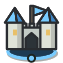
сердце базы
Ратуша
- HP
- Цена
- Обзор
- 700
- стартовая
- 4
+3 золота и +2 дерева в ход, 10 мест населения. Нанимает рабочих и разведчиков. Её потеря — поражение.
Изучите карту, наладьте добычу золота и дерева, развивайте базу и соберите армию. Побеждает тот, кто разрушит вражескую ратушу. Компьютерный противник, как и вы, не видит неразведанную часть карты.
Компьютер отдаёт те же приказы, что и игрок, и подчиняется тем же проверкам. Никаких бонусов и обхода тумана.
Урон рассчитывается по формуле: разброса и ответного удара нет. Результат виден ещё до атаки.
Сторона, потерявшая ратушу, выбывает — её оставшиеся войска и здания исчезают. Последний оставшийся побеждает.
На стартовом экране выберите режим, характер и сложность противника, размер карты и способ её создания. Открыть гайдбук можно по ссылке под кнопкой «Начать игру» или из меню партии.
Каждая карта создаётся заново. Чтобы получить ту же карту, укажите тот же сид — целое число на стартовом экране.
| Местность | Стоимость движения | Что значит |
|---|---|---|
| Поле | 1 | По полю можно двигаться, строить и нанимать юнитов. |
| Холм | 2 | Как поле, но дороже. Холм увеличивает обзор наземных юнитов и зданий на 1 клетку. |
| Болото | 2 | Проходимо, строить нельзя. |
| Лес | — | Наземные войска не могут пройти через лес. Здесь можно построить лесопилку, а рабочий может расчистить лес. |
| Золото | — | Наземные войска не могут зайти на клетку с месторождением. Здесь строят золотой рудник. |
| Гора | — | Преграда для наземных войск. |
| Вода | — | Преграда для наземных войск. |
Двигаться можно только по четырём направлениям, без диагоналей. Грифон пролетает над любой клеткой за 1 очко движения.
| Пресет | Клеток |
|---|---|
| Маленькая | 15 × 15 |
| Средняя | 24 × 24 |
| Большая (по умолчанию) | 30 × 30 |
| Огромная | 40 × 40 |
| Широкая | 100 × 60 |
| Гигантская | 100 × 100 |
Мир может быть намного больше экрана — до 100×100 клеток. Камера показывает его часть, мини-карта — весь целиком.
| Действие | Как |
|---|---|
| Выбрать / приказать | ЛКМ по юниту, зданию или подсвеченной клетке |
| Снять выбор | Повторный клик по выбранному или Esc. В режиме стройки, найма, расчистки или прицела осады первый Esc отменяет только режим |
| Следующий юнит с действиями | Tab — по кругу, камера переходит к юниту |
| Свободный рабочий | . — рабочий, который не работает в здании |
| К ратуше | H |
| Завершить ход | Enter |
| Действия выбранного | Панель внизу карты: у каждой кнопки подписана клавиша — например, «Построить» у рабочего B, затем здание цифрой 1…0; найм в здании — сразу цифрой. Недоступная кнопка приглушена, причина — в подсказке при наведении. Панель можно перетащить за ручку слева |
| Перетащить карту | ПКМ или СКМ, Пробел + ЛКМ (приказ при этом не отдаётся) |
| Масштаб | Колесо — к точке под курсором; + / −; от 6 до 64 px на клетку |
| Перемещение по карте | W A S D или стрелки |
| Кнопки поверх карты (справа внизу) | «−», масштаб в процентах (клик сбрасывает его до 100%), «+», «Вся карта», «К базе» |
| Мини-карта | Клик или перетаскивание переносит камеру, не меняя выбор |
Клавиши работают на любой раскладке: важна клавиша, а не буква — H и на русской раскладке (там это «Р»).
В начале партии камера наведена на вашу ратушу. Карта занимает весь экран: выбранный объект показан в карточке внизу слева, его действия — в панели внизу по центру, мини-карта — вверху справа (кнопка в её углу делает её полупрозрачной или прячет).
Каждая сторона видит только то, что рядом с её юнитами и зданиями, и помнит то, что видела раньше. Это касается и компьютерного противника.
| Клетка | Что вы видите |
|---|---|
| Видна | Настоящая местность и все объекты на ней. |
| Разведана | Отображается рельеф таким, каким вы видели его в последний раз. Чужие здания выглядят как раньше, но помечены знаком «?»; полосы здоровья у них нет. Скрытая стройка или разрушение не меняют сохранённое изображение. |
| Неизвестна | Сплошная темнота: даже рельеф не раскрывается. |
Скрытые объекты не попадают на карту, мини-карту, панель или курсор: игра отбрасывает их ещё до отрисовки.
Золотой рудник и лесопилка приносят доход, только когда внутри работает рабочий. Враг не видит рабочего и при атаке наносит урон зданию, поэтому такая работа важна и для обороны.
| Источник | За ход | Условие |
|---|---|---|
| Ратуша | +3 золота, +2 дерева | Всегда: даже без рабочих можно накопить на нового. |
| Золотой рудник | +15 золота | Внутри находится рабочий, который в этот ход не тратил действие на другую работу. |
| Лесопилка | +15 дерева | То же условие: рабочий внутри не должен тратить действие на другую работу. |
Доход начисляется в конце вашего хода. В каждом здании есть одно рабочее место. Если в этот ход рабочий строил, чинил или расчищал лес, добыча не начисляется, но он остаётся назначенным в это здание.
Любое своё здание, кроме ратуши, можно снести после подтверждения; затраченные ресурсы не возвращаются. Игра не позволит построить здание, которое, согласно известной вам карте, перекроет последний проход к зданию или ратуше.
Лимит населения складывается из мест, которые даёт ратуша (10) и каждая ферма (+5), но не может превышать 30. Рабочий и разведчик занимают по одному месту; мечник, лучник, копейщик, маг и лекарь — по два; всадник, осадная машина и грифон — по три. После разрушения фермы лимит уменьшается, но уже нанятые юниты не исчезают — просто нельзя нанимать новых.
В игре нет расходов на содержание армии, запасов еды и истощения месторождений.
Рабочий может построить девять типов зданий; ратуша уже стоит в начале партии. Цена указана в золоте (з) и дереве (д). Магическая защита каждого здания равна 10, поэтому маг наносит постройкам мало урона.

+3 золота и +2 дерева в ход, 10 мест населения. Нанимает рабочих и разведчиков. Её потеря — поражение.
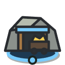
+15 золота в ход с рабочим внутри.
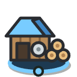
+15 дерева в ход с рабочим внутри.
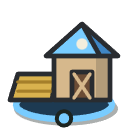
+5 к лимиту населения.
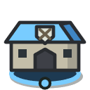
Мечник, лучник, копейщик.
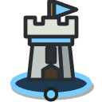
Стреляет сама: урон 20, дальность 3, раз в ход. Бьёт и наземные, и воздушные цели.
Всадник.
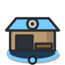
Осадная машина.
Маг, лекарь, грифон. Самое хрупкое из зданий найма.
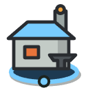
Открывает пять исследований — новые правила для всей вашей стороны. Без кузницы начатое исследование стоит на паузе.
Выберите свою кузницу — в нижней панели появятся исследования с цифрами 1…5. Изученное и текущую работу видно и в верхней панели — плашка «Исследования». Цена списывается сразу; работа идёт в конце каждого вашего хода, включая ход запуска. Одновременно изучается одно исследование, каждое — один раз. Отмена не возвращает ресурсы; отменить работу можно и из списка в верхней панели — даже если кузница потеряна. Изученное действует на всех ваших юнитов, старых и новых, и не пропадает при потере кузницы.
Укрепление после Инженерии: 60 HP, 40 дерева, ставится на поле или холм. Через него нельзя пройти; дохода, населения и обзора он не даёт. Частокол нельзя поставить так, чтобы закрыть последний выход с базы. Сносится и чинится как здание.
Новобранец появляется рядом со зданием найма и начинает действовать со следующего хода. Цена указана в порядке «золото / дерево». Характеристика «Атака» показывает урон и дальность.
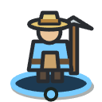
Строит, добывает, чинит, расчищает лес. Не сражается.
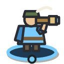
Самый широкий обзор в игре, но в бою разведчик слаб.
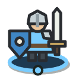
Крепкий и недорогой, не требует дерева. Не может атаковать воздушные цели.
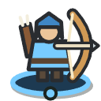
+6 против летающих. Хрупок вблизи.
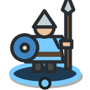
Броня 2, +16 против конницы.
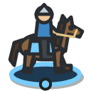
Броня 1, +10 против стрелков и рабочих.
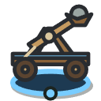
Атакует только подготовленным ударом по клетке. Бонус урона против зданий — +40.
Магический урон игнорирует броню. Магическая защита — 4.
Не атакует, а лечит союзного юнита. Магическая защита — 4.
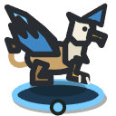
Летает над водой, горами и лесом. Броня — 1. Может атаковать наземные и воздушные цели.
| Юнит | Найм | HP | Ход | Обзор | Атака | Дальн. | Место | Цена | Категория | Защита и бонусы |
|---|---|---|---|---|---|---|---|---|---|---|
| Рабочий | Ратуша | 25 | 4 | 3 | — | — | 1 | 40 / 40 | рабочие | — |
| Разведчик | Ратуша | 45 | 5 | 6 | 6 | 1 | 1 | 50 / 20 | пехота | — |
| Мечник | Казармы | 110 | 3 | 3 | 18 | 1 | 2 | 90 / 0 | пехота | — |
| Лучник | Казармы | 55 | 3 | 4 | 22 | 3 | 2 | 110 / 120 | стрелки | +6 летающие |
| Копейщик | Казармы | 100 | 3 | 3 | 14 | 1 | 2 | 70 / 40 | пехота | броня 2; +16 конница |
| Всадник | Конюшня | 90 | 5 | 4 | 16 | 1 | 3 | 120 / 60 | конница | броня 1; +10 стрелки и рабочие |
| Осадная машина | Мастерская | 70 | 2 | 2 | 12 | 2–5 | 3 | 150 / 150 | осада | +40 здания |
| Маг | Святилище | 50 | 3 | 3 | 20 маг. | 3 | 2 | 120 / 80 | стрелки | маг. защита 4 |
| Лекарь | Святилище | 45 | 3 | 3 | +20 HP | 2 | 2 | 90 / 60 | стрелки | маг. защита 4 |
| Грифон | Святилище | 85 | 5 полёт | 4 | 17 | 1 | 3 | 150 / 120 | летающие | броня 1 |
Каждый военный юнит может один раз за ход атаковать или лечить. Если юнит больше не может двигаться и рядом нет доступных целей, он отображается на карте затемнённым.
Урон можно точно рассчитать заранее. Выберите атакующего и цель — калькулятор использует те же правила, что и игра.
Физический урон уменьшается бронёй: у копейщика она равна 2, у всадника и грифона — 1. Маг наносит магический урон, который игнорирует броню, но уменьшается магической защитой: она равна 4 у мага и лекаря и 10 у каждого здания.
Категории: пехота (мечник, копейщик, разведчик), стрелки (лучник, маг, лекарь), конница, осадные машины, рабочие, летающие юниты и здания. Бонусы: копейщик наносит на 16 урона больше коннице, всадник — на 10 больше стрелкам и рабочим, лучник — на 6 больше летающим, осадная машина — на 40 больше зданиям.
Атаковать грифона могут только лучник, маг, другой грифон и башня. Мечник, копейщик, всадник, разведчик и осадная машина воздушные цели не поражают.
Ответного удара и разброса нет. Юнит или здание уничтожается, когда его здоровье падает до нуля или ниже. Погибший юнит освобождает место в лимите населения.
У каждого типа войск своя роль и свои сильные стороны.
Обзор — 6 клеток, запас движения — 5 очков. Разведчика можно нанять в ратуше уже в первый ход; он поможет найти ресурсы и базу противника.
Всадник наносит копейщику 16 − 2 = 14, копейщик всаднику — 14 + 16 − 1 = 29. Пара копейщиков у базы — надёжный ответ на рейды.
5 очков хода и +10 против стрелков и рабочих: лучник теряет 26 HP из 55, рабочий гибнет с одного удара. Но рабочий внутри рудника недосягаем — удар примет здание.
Наносит 20 магического урона, который не зависит от брони, и может атаковать воздушные цели. Против зданий он слаб: магическая защита снижает урон с 20 до 10.
Вместо атаки восстанавливает до 20 HP союзнику на расстоянии не более 2 клеток, но не выше его максимального здоровья. Держите лекаря за строем: у него всего 45 HP.
Каждая клетка полёта стоит 1 очко движения. Грифон пролетает над водой, горами, лесом и занятыми клетками, но остановиться может только на свободной. Наземная пехота его не достаёт.
Осадная машина не стреляет сразу: она выбирает клетку для удара, который произойдёт в начале её следующего хода. За это время противник может успеть ответить.
ИИ не знает, что находится за туманом войны. Он получает те же ограниченные сведения, что и игрок, помнит увиденное, выбирает стратегию и выполняет игровые приказы по одному.
Координаты баз, скрытые юниты и ресурсы не влияют на решения ИИ. Не влияет и отключение тумана в режиме отладки. ИИ не может атаковать невидимого юнита: по старым сведениям он может только переместиться к месту и проверить его. Как и игрок, он может подготовить осадный удар по разведанной клетке, где раньше видел здание.
Правила сгруппированы по ролям. Стратегия меняет приоритеты экономики, строительства, найма, разведки, наступления, обороны и исследований. Характер противника добавляет свои предпочтения поверх стратегии, но не даёт ему лишних знаний. Обычно она сохраняется не меньше трёх ходов и меняется, только если другая стратегия заметно лучше подходит к ситуации. При срочной угрозе ИИ сразу переключается на оборону; стратегию, которая потеряла смысл, он тоже меняет сразу.
За ход ИИ выполняет не больше 80 приказов. Пока он думает, вверху отображается баннер «Ход противника».
Карта отображает рельеф, объекты, туман, подсветки, курсор и эффекты. Перед приказом игра показывает доступные действия и их результат.
Снос здания тоже спрашивает подтверждение. Если юниты ещё могут идти, атаковать или лечить, «Завершить ход» переспросит — это можно отключить галочкой «Больше не спрашивать» до конца партии, а вернуть — флажком «Спрашивать перед концом хода» в «Меню».
Звук включается после первого клика в игре. Музыка меняется по ходу партии: спокойная тема при развитии, боевая — когда рядом с вашими войсками видны враги, отдельные темы для победы и поражения. У многих звуков есть несколько вариантов, они чередуются случайно. Здесь всё можно послушать.
Включается в меню партии. Позволяет увидеть весь мир, посмотреть глазами противника и прочитать его решения.
Обзор в отладке меняет только изображение. Увиденное при полном обзоре не становится «разведанным», ИИ принимает решения как обычно, а скрытые цели по-прежнему нельзя атаковать. Параметры в разделе «Исключения» действительно меняют правила для выбранной стороны. В партии при этом отображается отметка «Отладка».
Во втором режиме на стартовом экране можно составить армии и посмотреть, чем закончится их встреча, в том числе в бою двух компьютерных противников.
Большинство боевых кадров в гайдбуке снято в этом режиме: в нём можно быстро собрать нужную сцену.
Игра в разработке. Ниже отдельно перечислены готовые, частично реализованные и запланированные возможности.